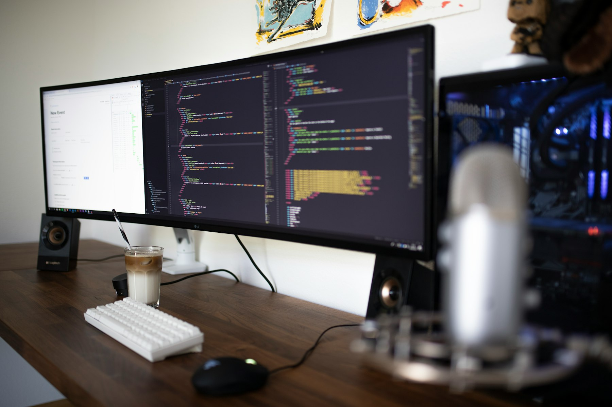

TL;DR
Explore alternatives to Otter AI like Fireflies and Descript, considering user specifics and budget. Freelancers might stick to free versions, while teams could save time and costs with premium options. Identify your exact needs to make the best choice.
Quick Verdict: Best Alternatives to Otter AI
If you’re seeking efficient note-taking software beyond Otter AI, consider tools like Rev, Fireflies, and Descript. These platforms vary in price and features but offer compelling alternatives.
For instance, Rev focuses on transcription quality with human oversight, starting at $1.25 per minute. Fireflies excels in integration capabilities, making it ideal for teams using platforms like Zoom and Microsoft Teams.
Descript, available from $12 per month, combines audio editing with transcription, providing a unique blend of features for content creators.
Each option caters to different user needs, making it vital to assess your specific requirements before deciding.
Who Should Stay Free and Who Should Upgrade
Determining whether to stick with free versions or upgrade varies by user type. Freelancers and small businesses might find free options like Google Docs’ voice typing or Zoom’s auto-transcription sufficient for simple meetings.
However, professionals in larger corporate environments face more complexity. They may benefit from advanced features in premium tools like Fireflies or Descript, which can range from $10 to $30 per user per month.
The potential time savings through more accurate transcription and cloud storage justify this investment, especially when managing multiple teams or projects.
Assessing your specific needs is crucial here; what works for a solo entrepreneur may not suffice in a corporate setting.
Where Premium Starts Paying for Itself

Investing in premium tools often yields high returns through improved efficiency and reduced time waste. For example, if a business opts for Fireflies at $19 per month per user, it can consolidate meeting notes and automatically integrate with calendar apps.
With teams spending up to 10 hours weekly on note-taking and follow-ups, this tool can recoup its costs within a month by freeing up staff time for more productive tasks.
The tradeoff here is that premium tools often come with a learning curve; teams may face initial resistance to new systems. Yet, the long-term benefits, such as increased accuracy and better collaboration, generally outweigh these initial hurdles.
Investing in a robust tool can significantly streamline workflows, minimizing wasted effort on repetitive tasks.
A Real Setup or Switching Scenario
### A Real Setup or Switching Scenario
Imagine a company transitioning from Otter AI to Fireflies, a move prompted by the need for more comprehensive note-taking functionalities. The initial setup process spanned four days—considering comprehensive training sessions for employees, system integrations with their existing tools such as Zoom and Slack, and configuring the software to align with their meeting templates.
During this early phase, they faced some real challenges in adjusting to Fireflies’ interface; capturing nuances of conversations was tricky at first.
For instance, in one particularly long strategy meeting, the team struggled for nearly an hour trying to ensure all key points were correctly documented.
However, once acclimated, they discovered that Fireflies’ advanced AI features automated note-taking effectively, slashing administrative oversight time.
Previously, the organization dedicated around 12 hours weekly to manually organizing and reviewing meeting notes. Post-implementation, this effort reduced to merely 4 to 5 hours each week, translating to an impressive savings of 7 to 8 hours, or a 60% decrease in time spent.
This newfound efficiency allowed team members to reallocate their efforts to other critical projects, such as developing a new product line.
The investment in setup and training totaled approximately $1,200. Initially higher than they expected, the cost was offset by the improvement in productivity, leading to a projected increase of $18,000 in the value of team output within just one month.
Their successful transition from Otter AI to Fireflies not only improved meeting notes but also fostered a culture of collaboration, proving essential in their growth strategy.
Mistakes, Hidden Costs, and Overkill Choices
### Mistakes, Hidden Costs, and Overkill Choices
A common mistake businesses make is underestimating the importance of aligning software capabilities with user needs. For example, a startup chose Descript for its advanced editing capabilities but quickly found themselves overwhelmed.
The platform's array of features—including text-to-speech, video editing, and collaborative tools—were more than they required. Instead of facilitating productivity, these extra options led to wasted resources of over $300 monthly on functionalities that sat unused.
Their core focus was meeting notes, and yet they spent hours navigating a complex interface, resulting in frustration and delayed project deliverables.
Hidden costs can also accumulate rapidly when transitioning to new software. One mid-sized company discovered that implementing a note-taking tool like Notion required a week of intensive employee training and an additional two weeks of adjustment.
This downtime translated to a 15% decrease in productivity for that month, amounting to approximately $18,000 in lost wages alone. Furthermore, companies tend to overlook the discomfort staff might feel during this transition.
A sales team allocated around $500 for training sessions, yet found that even after those sessions, 40% of staff continued to struggle with the software, leading to inconsistent meeting notes which hindered client follow-ups.
Matching the selected tool to the team's expertise is not just a matter of preference but one of functionality. For instance, a marketing agency initially opted for Fireflies.ai for its AI-powered transcription services but soon realized it didn’t integrate well with their project management tools.
The decision to switch mid-implementation incurred additional costs—up to $1,200 in integration fees—don’t forget the hours wasted on transferring data from one platform to another.
This choice not only created confusion among staff but also delayed project timelines, revealing a glaring oversight in evaluating the long-term implications of adapting tools that don't fit seamlessly into existing workflows.
Best Pick by User Type
Choosing the right software correlates closely with user types and organizational size. Solo freelancers might find Google Docs or Otter’s free tier meets their needs without overspending.
For small teams, Fireflies offers robust support for meeting integration and teamwork at $19 monthly, a fair investment for their enhanced productivity.
Larger enterprises investigating comprehensive solutions should consider Descript or Rev, weighing the advanced features against costs of up to $30 per user per month.
Identifying your exact needs—whether simple note-taking or more complex integration—allows you to select tools that fit both your budget and growth stage, ensuring efficiency and productivity moving forward.
FAQ
What features should I look for in Otter AI alternatives?
Look for features such as real-time transcription, integration capabilities, user-friendly interfaces, and collaborative editing, depending on your team size and needs.
How do pricing models differ among Otter AI alternatives?
Pricing can range from free versions with limited features to premium plans costing up to $30 per user per month, depending on functionalities offered.
Are there any free alternatives to Otter AI?
Yes, tools like Google Docs voice typing or Zoom's in-built transcription can serve as effective free alternatives for basic note-taking.
What should I consider before switching from Otter AI?
Evaluate functionalities you actually use, integration with existing tools, and team comfort with the new software to avoid disruption.
This article is reviewed for practical usefulness and updated when information changes.
Choose faster
Use this article to narrow the field then compare your top options by price, setup friction, and upgrade risk.
Search more articles
Find related tools, workflows, and guides.
Photo credits
- Photo 1: Jakub Żerdzicki via Unsplash
- Photo 2: Alvaro Reyes via Unsplash
- Photo 3: Caspar Camille Rubin via Unsplash
- Photo 4: Duskfall Crew via Unsplash
- Photo 5: Harshit Katiyar via Unsplash